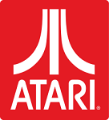

Atari is a corporate and brand name owned by several entities since its inception in 1972, currently by Atari Interactive, a subsidiary of the French publisher Atari, SA. The original Atari Inc., founded in 1972.
In 1984, the original Atari Inc. was split dut to its role in The video game crash of 1983(Atari Shock), and the arcade division was turned into Atari Games Inc.
|